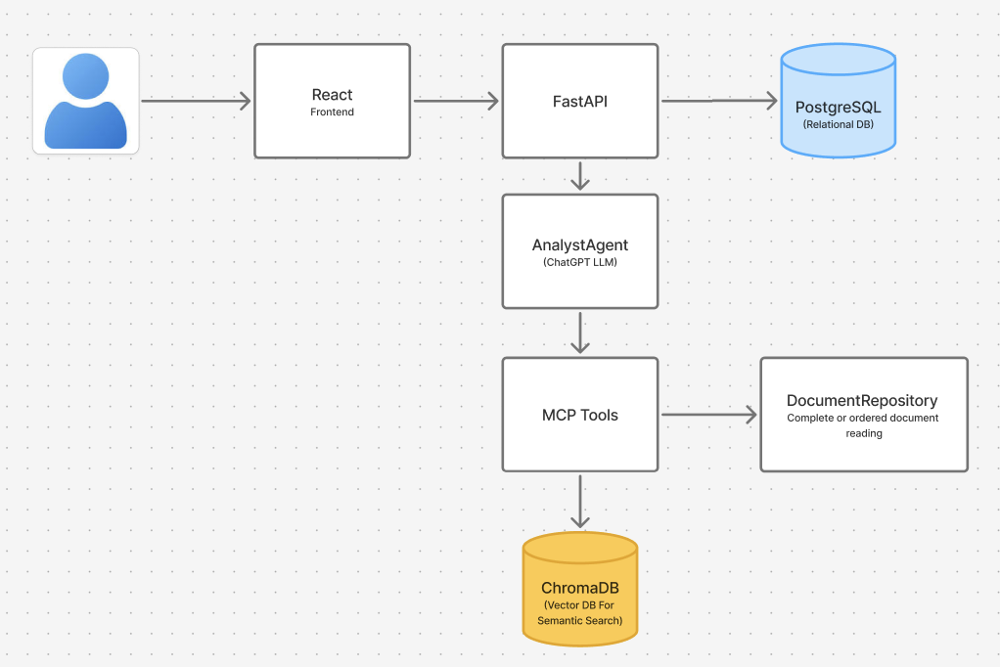
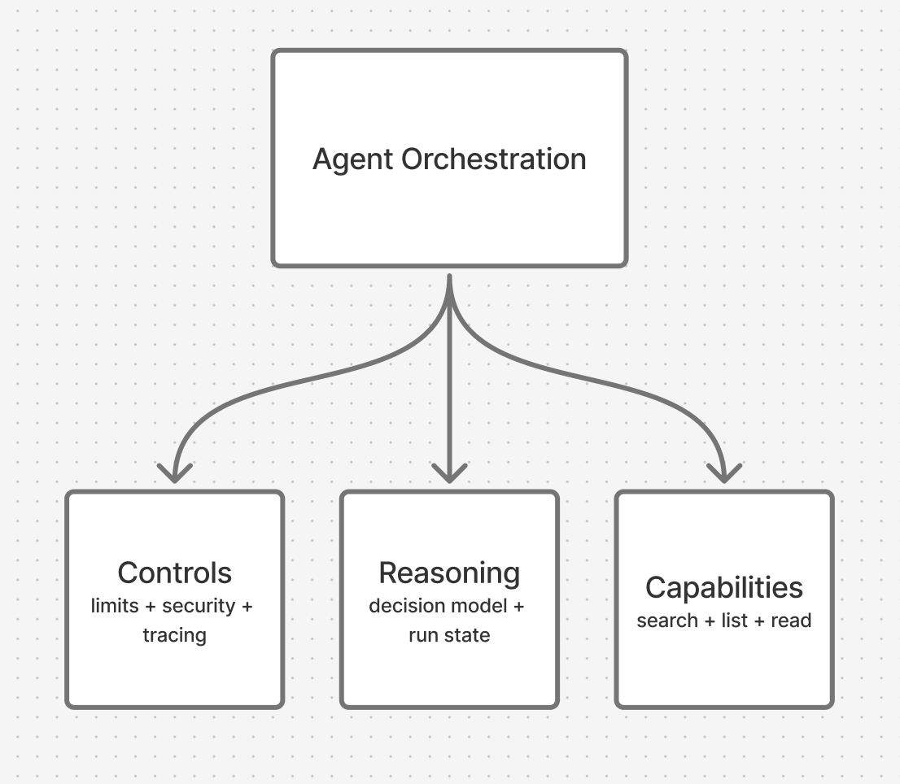
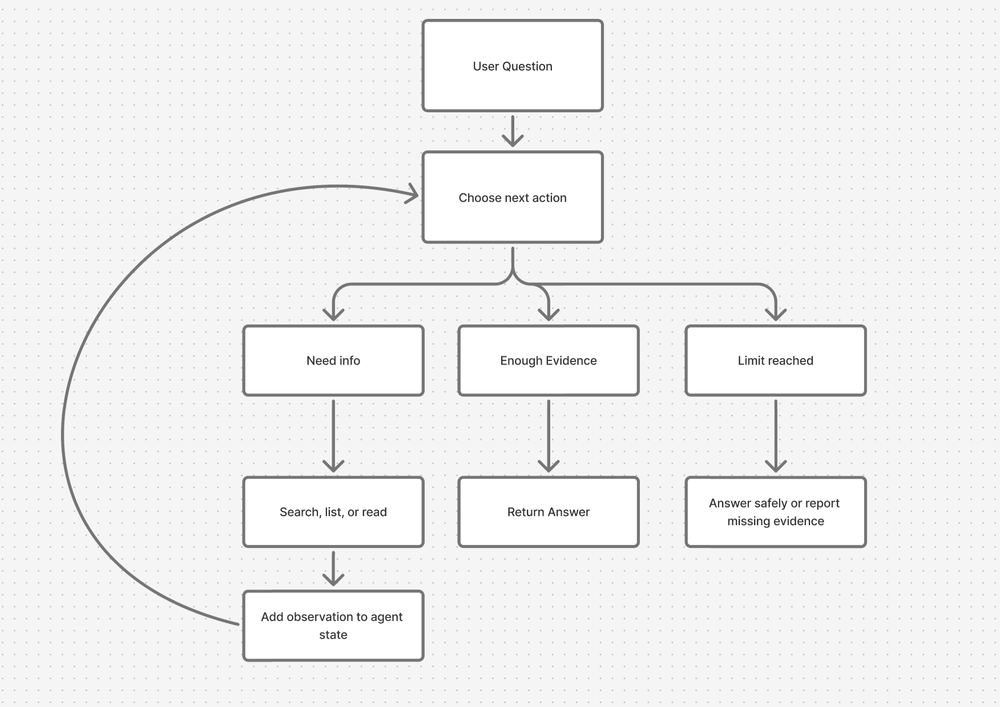
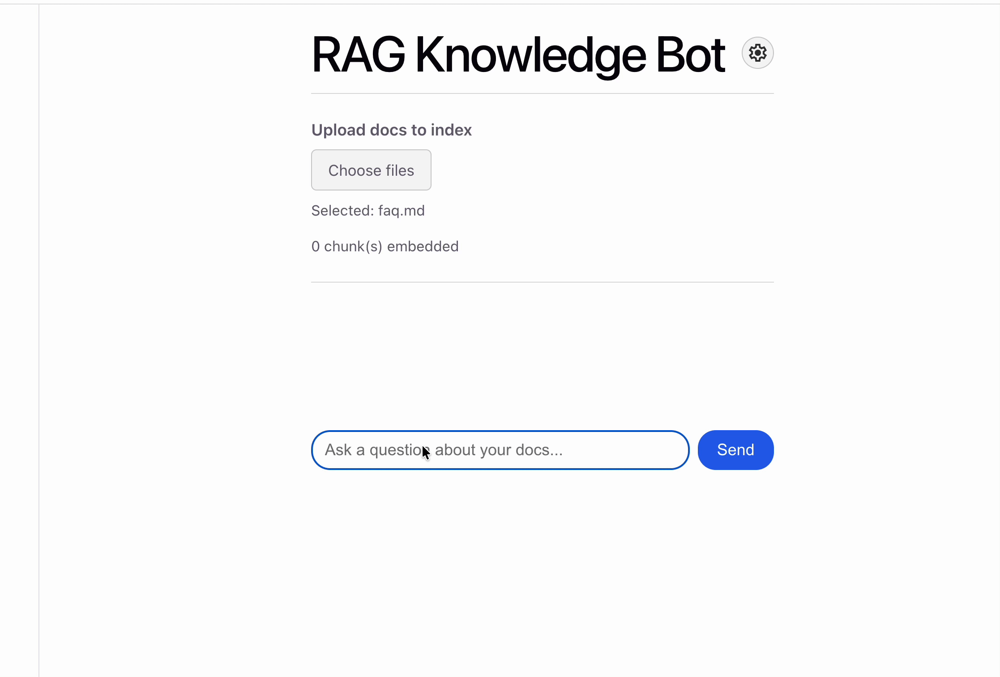
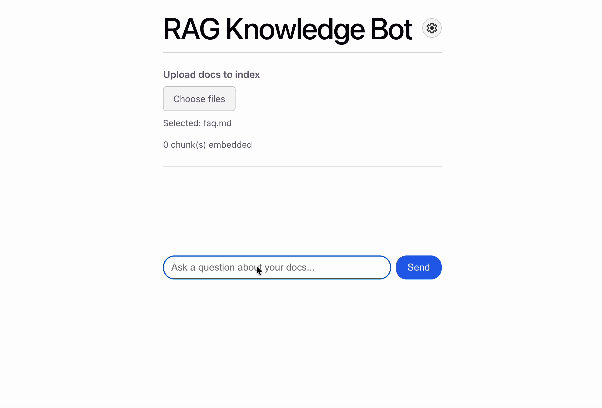
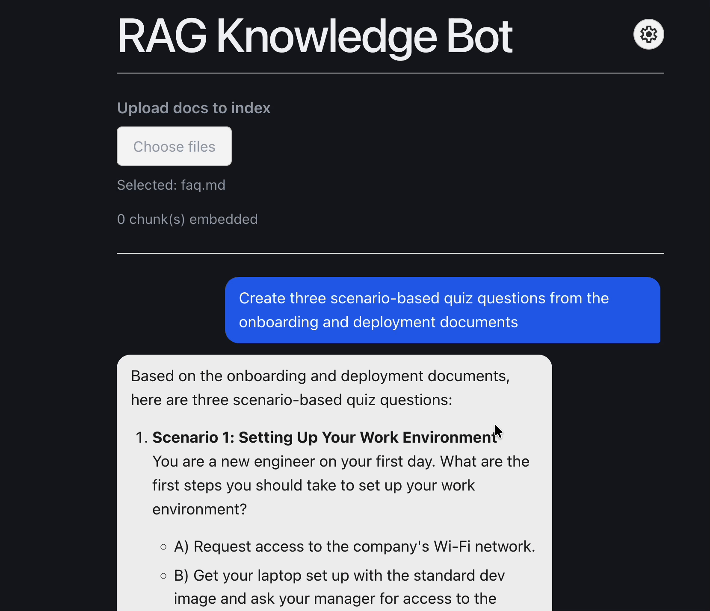

1 · Overview
An experimental AI document analysis system exploring retrieval-augmented generation, MCP-based tool integration, and agent orchestration. Built to investigate how AI agents retrieve evidence, make SEARCH/ANSWER decisions, and produce grounded responses, with ongoing evaluation of retrieval quality, model performance, and decision-making reliability.
2 · Research questions
Primary question
How do retrieval strategies, document representation, and agent orchestration affect the relevance and completeness of evidence available to an AI agent?
I initially investigated how document chunking, embedding similarity, retrieval limits, and search decisions influenced the information retrieved by Analyst Agent. Although the system generally performed well with a small document collection, benchmarking revealed that relevant passages did not always provide sufficient context for more complex requests.
A factual lookup might be answered using a few semantically similar chunks, while a cross-document comparison or creative synthesis task requires broader coverage, explicit document selection, and integration of information across sources.
Emerging question
How can we design agent-computer interfaces that enable AI agents to select appropriate information-access strategies based on the user’s task?
3 · Implementation and research methods
Analyst Agent began as a self-directed exploration of retrieval-augmented generation (RAG), Model Context Protocol (MCP), and AI agent orchestration. For the first MVP, I developed a document question-answering system that combines semantic retrieval with an agentic SEARCH/ANSWER loop.
System architecture

To investigate the emerging question, I expanded the agent’s read-only MCP interface beyond semantic search to include document discovery and ordered reading. This gives the agent multiple ways to access information while preserving explicit execution and resource constraints.
list_documents
Discover which documents are available before selecting sources.
Semantic search
Retrieve passages that are similar to a targeted query.
read_document
Retrieve ordered chunks for broader document coverage.
Agent orchestration

The agentic loop

4 · Emerging insight
During preliminary benchmarking, I observed that Analyst Agent generally retrieved relevant information successfully from a small document collection. However, some requests exposed limitations that could not be resolved simply by improving similarity scores or increasing the number of retrieved chunks.
The original pipeline was built around an assumption: a user’s question can be answered using a small set of independently retrieved document chunks. While this approach is effective for targeted factual lookups, more complex requests may require a fundamentally different information-access strategy.
Example request: “Review these two case studies and generate three original discussion questions based on the arguments presented.”
This task requires capabilities beyond conventional top-k semantic retrieval:
- Explicit document selection: Identify and use both requested documents rather than allowing semantic similarity to determine which sources are represented.
- Broad evidence coverage: Understand the major arguments and supporting points across both documents, not only passages that resemble the query.
- Cross-document synthesis: Identify connections, contrasts, and tensions between ideas presented in different sources.
- Creative generation: Produce an original interpretation or set of questions when appropriate. An overly restrictive evidence-grounding prompt could prevent legitimate synthesis.
- Coverage validation: Verify that the response meaningfully incorporates evidence from both documents instead of assuming that referencing them guarantees adequate coverage.
Related challenges appear in document comparison, comprehensive information extraction, external research, and creative transformation—tasks that may require balanced source representation, completeness checks, source verification, or understanding a document as a whole.
5 · Design insight
Benchmarking showed that some limitations were not simply caused by retrieval accuracy or language-model performance. They reflected a mismatch between the tasks users wanted to accomplish and the capabilities available to the agent.
Reading about Agent-Computer Interaction (ACI) helped me recognize a connection to my background in Human-Computer Interaction (HCI). Both involve understanding the tasks an interface must support, identifying interaction failures, designing appropriate capabilities, and evaluating whether those capabilities enable successful task completion.
Just as human-facing interfaces must support what people want to accomplish, agent-facing interfaces must expose capabilities that allow AI systems to complete their assigned tasks reliably. Improving an AI system does not always require a more capable model; sometimes it requires redesigning the environment and interfaces through which the model operates.
This also raises a distinction between evidence-grounded reasoning and extractive answering. An AI system should not invent unsupported claims, but grounding does not mean restricting every response to information explicitly written in the source. Synthesis and creative interpretation can produce original outputs while remaining faithful to the underlying evidence.
6 · Reflection and future direction
My initial interest was understanding how RAG, MCP, and agent orchestration work together. Benchmarking revealed that the more consequential challenge was determining whether the system had retrieved sufficient and appropriate information for the user’s actual goal.
The expanded architecture is implemented. The next step is comparative evaluation: testing whether the additional tools improve evidence relevance and completeness across factual lookup, summarization, comparison, and synthesis tasks.
Current boundary: Document discovery and ordered reading are implemented alongside semantic search. Their comparative effectiveness—and the agent’s ability to select among them reliably—remains an area for further investigation.
7 · Demos
These recordings show how Analyst Agent handles a direct document question, a question that requires additional searching to gather enough context, and a request that reads across multiple sources before generating new material grounded in those documents.


